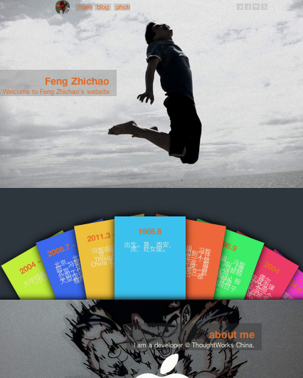

Created by Feng Zhichao
http://www.chaojiwudi.com
<html>
<head>
<title>TITLE</title>
<style type="text/css">
.TITLEPage { width:300px;border-collapse:collapse;background-color:white; }
.TITLEPage td { font:normal 14px/1.5em Goudy, Georgia, serif;color:#47ae32; }
***snip (all of the css is like the above)***
</style>
***snip***
<table>
<td width="350px" height="128px"> <td><a href="/css">blah
</a> <a onclick="clickHander();return false"
href="/css/properties/" style="color:red"></a> </td>
***snip (the pattern above repeats about 10 times)***
</table>
<br><br><br>
</html><!DOCTYPE html>
<html>
<head>
<title>Bootstrap 101 Template</title>
<meta name="viewport" content="width=device-width, initial-scale=1.0">
<!-- Bootstrap -->
<link href="css/bootstrap.min.css" rel="stylesheet" media="screen">
</head>
<body>
<h1>Hello, world!</h1>
<script src="http://code.jquery.com/jquery.js"></script>
<script src="js/bootstrap.min.js"></script>
</body>
</html>Thanks!